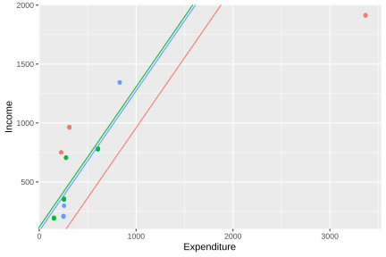
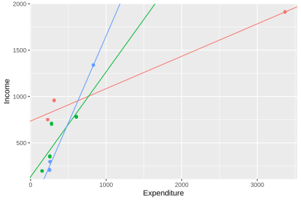

7.3 Linear Multilevel Model
The multilevel models most commonly used in practice are extensions of the classical linear model for data with a hierarchical structure. In their basic formulation, these models assume that the response variable is continuous and follows a normal distribution conditional on the fixed and random effects included in the model. It is also assumed that the random effects and residual errors are independent of each other and normally distributed with zero mean and constant variances.
7.3.1 Null Model
In multilevel regression analysis, two types of parameters are distinguished: regression coefficients, known as fixed parameters, and variance components associated with random effects. A fundamental initial stage in this type of analysis consists of decomposing the total variability of the dependent variable into the different levels of the hierarchical structure. In the context of the previous example, this decomposition makes it possible to separate income variation into a component attributable to differences within strata and another associated with differences between strata.
The starting point for this decomposition is the so-called null model, which does not incorporate explanatory variables and is expressed as
\[ y_{kj} = \beta_{0j} + \epsilon_{kj} \]
where \(y_{kj}\) denotes the observed value of income for unit \(k\) in stratum \(j\). The term \(\beta_{0j}\) represents the stratum-specific intercept, capturing the differences in the average levels of the variable between groups. Finally, \(\epsilon_{kj}\) corresponds to the error at the unit level, which captures the unexplained variability within each stratum and is assumed to have zero mean and constant variance conditional on the group.
In turn, the stratum intercept can be decomposed into a part common to all strata and a specific deviation for each of them, as follows:
\[ \beta_{0j} = \gamma_{00} + \tau_{0j} \]
where \(\gamma_{00}\) represents the global average intercept and \(\tau_{0j}\) is the random effect for the intercept that captures the deviation of stratum \(j\), allowing the heterogeneity between strata to be explicitly modeled. Furthermore, the random components of the model are assumed normally distributed with zero mean and specific variances for each level of the hierarchy. In particular, the random effect associated with the intercept by stratum satisfies
\[ \tau_{0j} \sim N\left(0, \sigma_{\tau}^{2}\right), \]
which implies that the deviations of each stratum from the global intercept are distributed around zero, with a variability determined by \(\sigma_{\tau}^{2}\). Analogously, the unit-level error term follows the distribution
\[ \epsilon_{kj} \sim N\left(0, \sigma_{\epsilon}^{2}\right), \]
where \(\sigma_{\epsilon}^{2}\) represents the residual variability within the strata. From this model, the intraclass correlation coefficient (ICC) is defined, which quantifies the proportion of the total variance explained by the differences between strata:
\[ \rho = \frac{\sigma_{\tau}^{2}}{\sigma_{\tau}^{2} + \sigma_{\epsilon}^{2}} \]
A high ICC value indicates that a significant proportion of the total variability of the variable of interest is due to differences between strata, which suggests the presence of relevant heterogeneity between groups and the need to explicitly incorporate that structure in the model. In contrast, a low ICC implies that the variability is mainly concentrated within the strata, which show greater relative homogeneity among themselves.
Continuing with the analysis of the example survey, when the variable of interest is income, the null model is the starting point for quantifying what proportion of the total variability is due to differences between strata and what proportion corresponds to differences between households within the same stratum.
Estimation of multilevel models in R is performed using the lme4 (Bates et al., 2026) package. In particular, the lmer() function makes it possible to specify random effects using expressions of the form (effect | group). In this context, the expression (1 | Stratum) indicates that the model includes a random intercept for each stratum. The value 1 represents the model intercept, while Stratum identifies the grouping variable.
Table 7.1 presents the estimated intercepts for each stratum from the null model. Since this model does not incorporate explanatory variables, each intercept can be interpreted as the expected average income in the corresponding stratum. The results show substantial differences between groups: while the idStrt004 stratum presents the highest estimated average income (959.6), the idStrt009 stratum registers the lowest value (207.6). These differences suggest the existence of substantial variability between strata, justifying the incorporation of random effects to explicitly model the hierarchical structure of the data.
| (Intercept) | |
|---|---|
| idStrt001 | 635 |
| idStrt002 | 507 |
| idStrt003 | 486 |
| idStrt004 | 960 |
| idStrt005 | 518 |
| idStrt006 | 439 |
| idStrt007 | 477 |
| idStrt008 | 377 |
| idStrt009 | 218 |
| idStrt010 | 594 |
| idStrt011 | 590 |
| idStrt012 | 362 |
Based on the variance components estimated in the null model, the intraclass correlation is calculated using the icc() function from the performance (Lüdecke et al., 2026) package. This indicator quantifies the proportion of total income variability that can be attributed to differences between strata, constituting a measure of the dependence between observations belonging to the same group. The results obtained are presented in Table 7.2.
| ICC_adjusted | ICC_unadjusted | optional |
|---|---|---|
| 0.329 | 0.329 | FALSE |
The estimated intraclass correlation of 32% indicates that approximately one third of the total observed variability in income is due to differences between strata, while the remaining percentage corresponds to differences between households within the same strata. Finally, since the null model does not include any predictors, the estimate of income within each stratum is constant and equal to the estimated intercept for that stratum.
7.3.2 Random Intercept Model
The simplest multilevel model that incorporates covariates is the random intercept model. In this specification, it is assumed that the effects of the explanatory variables are common to all strata, while the average level of the response variable may vary between them. The model is expressed as
\[ y_{kj} = \beta_{0j} + \mathbf{x}_{kj}\boldsymbol{\beta} + \epsilon_{kj} \]
where \(y_{kj}\) represents the observed value of the response variable for unit \(k\) belonging to stratum \(j\), \(\mathbf{x}_{kj}\) is the vector of covariates associated with that unit, \(\boldsymbol{\beta}\) is the vector of regression coefficients common to all strata and \(\epsilon_{kj}\) corresponds to the random error at the unit level.
As in the null model, the intercept is modeled as \(\beta_{0j} = \gamma_{00} + \tau_{0j}\); where \(\gamma_{00}\) represents the global average intercept and \(\tau_{0j}\) is the random effect associated with stratum \(j\), which measures the deviation of that stratum from the overall average.
The random components of the model are assumed to be independent and normally distributed, so that \(\tau_{0j} \sim N(0,\sigma_{\tau}^{2})\) and \(\epsilon_{kj} \sim N(0,\sigma_{\epsilon}^{2})\). Under these conditions, the total variability of the response variable can be decomposed into a component between strata, quantified by \(\sigma_{\tau}^{2}\), and a component within the strata, represented by \(\sigma_{\epsilon}^{2}\).
The following code fits a multilevel random intercept model, where income (Income) is explained by household expenditure (Expenditure), also incorporating a random effect associated with the stratum (Stratum) and using the q-weighted weights stored in the variable qk. Once the model is fitted, the intraclass correlation (ICC) is estimated from the estimated variance components.
random_intercept_model <- lmer(
Income ~ Expenditure + (1 | Stratum),
data = survey_data,
weights = qk
)
performance::icc(random_intercept_model)## # Intraclass Correlation Coefficient
##
## Adjusted ICC: 0.203
## Unadjusted ICC: 0.109The adjusted intraclass correlation of 0.196 indicates that, after controlling for household expenditure (Expenditure), approximately 20% of the residual variability in income remains attributable to differences between strata. Although this value is lower than that obtained with the null model, the magnitude of the ICC continues to justify the use of a multilevel model to adequately represent the hierarchical structure of the data. The estimated coefficients by stratum are presented in Table 7.3:
| (Intercept) | Expenditure | |
|---|---|---|
| idStrt001 | 250.4 | 1.19 |
| idStrt002 | 156.8 | 1.19 |
| idStrt003 | 142.9 | 1.19 |
| idStrt004 | 296.8 | 1.19 |
| idStrt005 | -32.4 | 1.19 |
| idStrt006 | 53.8 | 1.19 |
| idStrt007 | 12.5 | 1.19 |
| idStrt008 | 107.1 | 1.19 |
To facilitate the visualization of the model results, the reduced subsample presented above is used, which contains only three selected strata.
estimated_coef <- inner_join(
coef(random_intercept_model)$Stratum %>%
tibble::rownames_to_column(var = "Stratum"),
plot_data %>%
select(Stratum) %>%
distinct()
)Figure 7.5 shows the estimated regression lines for each stratum under the random intercept model. The lines share the same slope, reflecting the common effect of expenditure on income, but they differ in their vertical position due to the specific intercepts estimated for each stratum.
ggplot(data = plot_data,
aes(y = Income, x = Expenditure, colour = Stratum)) +
geom_jitter() +
geom_abline(data = estimated_coef,
mapping = aes(slope = Expenditure,
intercept = `(Intercept)`,
colour = Stratum)) +
theme(
legend.position = "none",
plot.title = element_text(hjust = 0.5)
)
Figure 7.5: Estimated regression lines by stratum: model with random intercept
7.3.3 Random Intercept and Slope Model
A natural extension of the previous model is the random intercept and slope model. In this specification, not only is the average level of the response variable allowed to vary between strata, but the effect of one or more covariates is also allowed to differ between groups. In this way, each stratum can have its own regression line, both in terms of intercept and slope. The model can be expressed as
\[ y_{kj} = \beta_{0j} + x_{kj}\beta_{1j} + \mathbf{z}_{kj}\boldsymbol{\beta} + \epsilon_{kj}, \]
where \(y_{kj}\) represents the observed value of the response variable for unit \(k\) belonging to stratum \(j\), \(x_{kj}\) corresponds to the covariate whose slope is allowed to vary between strata, \(\mathbf{z}_{kj}\) contains the covariates with fixed effects common to all groups, and \(\epsilon_{kj}\) is the error term at the unit level. In this model, both the intercept and the slope associated with \(x_{kj}\) are considered random and are decomposed as follows:
\[ \beta_{0j} = \gamma_{00} + \tau_{0j}, \qquad \beta_{1j} = \gamma_{10} + \tau_{1j} \]
where \(\gamma_{00}\) and \(\gamma_{10}\) represent, respectively, the average intercept and slope in the population, while \(\tau_{0j}\) and \(\tau_{1j}\) capture the specific deviations of stratum \(j\) from those averages. These random effects are assumed normally distributed as follows:
\[ \begin{pmatrix} \tau_{0j} \\ \tau_{1j} \end{pmatrix} \sim N\left( \begin{pmatrix} 0 \\ 0 \end{pmatrix}, \begin{pmatrix} \sigma_{\tau_0}^2 & \sigma_{\tau_{01}} \\ \sigma_{\tau_{01}} & \sigma_{\tau_1}^2 \end{pmatrix} \right), \]
while the unit-level error satisfies \(\epsilon_{kj} \sim N(0,\sigma_{\epsilon}^{2})\). Consequently, the model makes it possible to quantify not only the variability between strata in the average levels of the response variable, but also the existing heterogeneity in the effect of the covariate whose coefficient is modeled as random.
The following code fits a multilevel model with random intercept and slope, in which income (Income) is explained by household expenditure (Expenditure) and area of residence (Zone). In this case, both the intercept and the effect of expenditure may vary between strata through random effects associated with Stratum, also using the q-weighted weights stored in the variable qk.
random_slope_model <- lmer(
Income ~ 1 + Expenditure + (1 + Expenditure | Stratum),
data = survey_data,
weights = qk
)
performance::icc(random_slope_model)## # Intraclass Correlation Coefficient
##
## Adjusted ICC: 0.690
## Unadjusted ICC: 0.457Note that the code specification simultaneously includes fixed effects and random effects for the intercept and the variable Expenditure. The terms outside the parentheses, 1 + Expenditure, correspond to the fixed effects of the model and make it possible to estimate the global average intercept and the global average slope associated with expenditure. For its part, the expression (1 + Expenditure | Stratum) incorporates the specific deviations of each stratum from those averages. The explicit inclusion of fixed effects is fundamental, since random effects are interpreted as deviations around a population mean. The model coefficients by stratum are presented in Table 7.4:
| (Intercept) | Expenditure | |
|---|---|---|
| idStrt001 | -222.8 | 2.730 |
| idStrt002 | 35.5 | 1.607 |
| idStrt003 | 151.9 | 1.164 |
| idStrt004 | 224.2 | 1.353 |
| idStrt005 | -89.7 | 1.286 |
| idStrt006 | 28.6 | 1.217 |
| idStrt007 | 41.0 | 1.079 |
| idStrt008 | 163.8 | 0.928 |
| idStrt009 | 16.6 | 0.838 |
| idStrt010 | 89.9 | 1.830 |
Once again, in order to facilitate the visualization of the results, the reduced subsample defined previously is used, which includes only three selected strata.
estimated_coef <- inner_join(
coef(random_slope_model)$Stratum %>%
tibble::rownames_to_column(var = "Stratum"),
plot_data %>%
select(Stratum) %>%
distinct()
)Figure 7.6 presents the estimated regression lines for each stratum under the random intercept and slope model. Unlike the random intercept model, in this case the lines differ both in their vertical position and in their slope, reflecting that strata not only have different average income levels, but also different strengths in the relationship between income and expenditure.
ggplot(data = plot_data,
aes(y = Income, x = Expenditure, colour = Stratum)) +
geom_jitter() +
geom_abline(data = estimated_coef,
mapping = aes(slope = Expenditure,
intercept = `(Intercept)`,
colour = Stratum)) +
theme(
legend.position = "none",
plot.title = element_text(hjust = 0.5)
)
Figure 7.6: Estimated regression lines by stratum: model with random intercept and slope